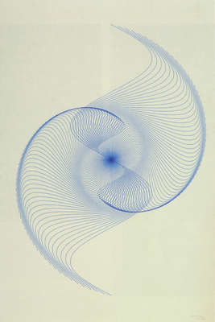

<< Editor
Color Blender >>
Bruno Sonderegger

Bruno Sonderegger
Sin-Spirale (1973)
Stroke Color:
Line Count:
Amplitude:
Frequency:
Wave Scale:
min Y Strech:
max X Strech:
min X Strech:
max Wave Width:
Stroke Weight: